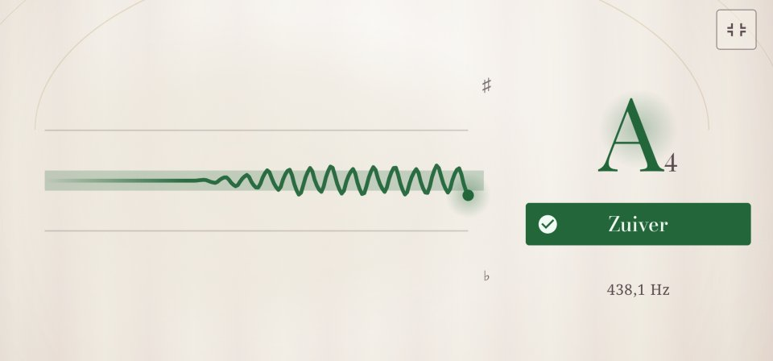

Toonlijn
De meter laat zien waar je noot nu zit. De toonlijn laat zien waar hij geweest is: de laatste vier seconden als een lijn, zodat je ziet hoe stabiel een lange noot is, hoe ver een bend gaat en hoe breed je vibrato is.

Je noot tekenen
- Tik op de functieknop boven de snaren (drie tegels en een plus) en kies Toonlijn. De lijn komt op de plek van de meter.
- Speel of zing een noot en houd hem aan.
- De lijn loopt van rechts naar links, het nieuwste moment rechts. Omhoog is te hoog, omlaag te laag. De zachte band in het midden is zuiver, binnen 5 cent; de vage lijnen erboven en eronder zitten 25 cent ernaast, de boven- en onderrand 50 cent, een kwarttoon.
De stukken van de lijn die zuiver waren, krijgen de kleur voor zuiver. Tussen twee noten, en als de noot verandert, breekt de lijn.
Wat je kunt proberen
- Een lange noot. Houd hem aan en houd de lijn in de band. Goede oefening voor zangers en voor strijkers, bij wie je vinger, niet een fret, de toonhoogte bepaalt.
- Een bend. Buig een noot langzaam op en kijk hoe de lijn stijgt. De toonlijn toont 50 cent naar elke kant, dus bij een langere bend klimt de lijn naar de rand en gaat verder rond de volgende noot. Een goede bend eindigt stabiel in de band van de noot waar je heen wilde. Dit gaat het best in Chromatisch.
- Vibrato. De lijn wordt een golf: de hoogte is hoe breed je vibrato is, de afstand tussen de golven hoe snel. Een gelijkmatige golf is een gelijkmatig vibrato.
- Een getokkelde snaar. Tokkel hard en de lijn begint wat te hoog en zakt dan: een snaar klinkt even te hoog als je hem hard aanslaat. Stem op waar hij tot rust komt.
Goed om te weten
- De toonlijn werkt voor elk instrument en voor je stem. De functieknop zit bij Snaren; zet de toonlijn daar aan en schakel daarna gerust naar Chromatisch: de toonlijn blijft.
- Tikken op een snaar kiest die snaar, net als bij de stemmer.
- Voor een grotere toonlijn zet je Instellingen → Focusmodus aan: Twangle draait op zijn kant met één grote meter, en de toonlijn komt op die plek, zoals op de afbeelding.
- Met TalkBack aan zegt Twangle hoe de lijn loopt: stabiel, zuiver, wisselend, 10 cent te hoog, buigt omhoog.
- Nog eens Toonlijn kiezen, of tikken op het tabblad Stemmer, brengt de meter terug.
Voor wie het wil weten: waar de lijn van gemaakt is
Het is de meting van de stemmer zelf, ongeveer 47 per seconde, getekend zodra hij binnenkomt, dus precies zo nauwkeurig als de stemmer. Omhoog en omlaag zijn cents vanaf de noot of snaar die de stemmer toont, net als op de meter. Wat TalkBack zegt, komt uit de laatste anderhalve seconde: een rechte lijn door de metingen die minstens 15 cent stijgt of daalt is een bend; metingen die binnen ongeveer 3½ cent van elkaar blijven zijn stabiel; al het andere is wisselend.